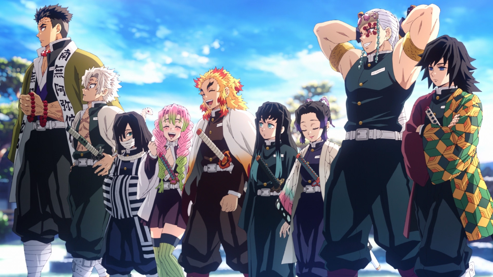

The Demon Slayer Corps
The Demon Slayer Corps ( 鬼 き 殺 さつ 隊 たい , Kisatsutai?) is an organization that has existed since ancient times, dedicating its existence to protecting humanity from demons.

The Demon Slayer Corps ( 鬼 き 殺 さつ 隊 たい , Kisatsutai?) is an organization that has existed since ancient times, dedicating its existence to protecting humanity from demons.
Giyu is a tall young man of a muscular stature and pale complexion, who is almost always seen wearing a serious and emotionless expression.

Kyojuro was a young adult of tall stature and muscular-athletic build. He is known to be charismatic and has an air of great optimism, having an enthusiastic smile plastered on his face nearly all the time.
Tengen is a very tall, broad-set young man with a heavy, muscular, lightly tanned skin frame. His hair is white and of uneven length, the longest waves touching his shoulders and is cut with three more prominent, shorter clumps, arching above his eyes on either side of his face to fall as bangs.
Tokito's black hair is long and straight and faded to pale turquoise as it approached his waist. In keeping with his overall appearance, Tokito wears his hair entirely loose.
If you are feeling disheartened, that you are somehow not enough, set your heart ablaze. Dry your eyes and look ahead. You may feel like you are digging your heels in, but the flow of time waits for no one. It won’t patiently stand by as you grieve.